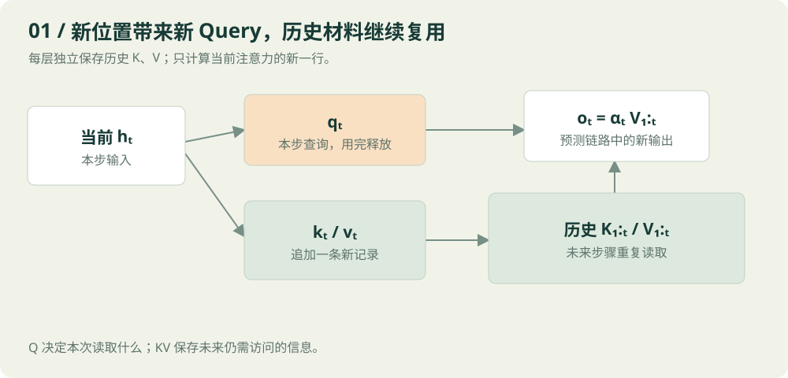
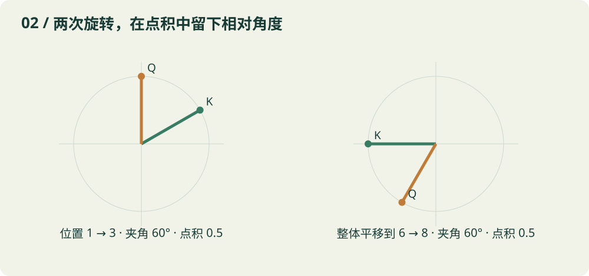
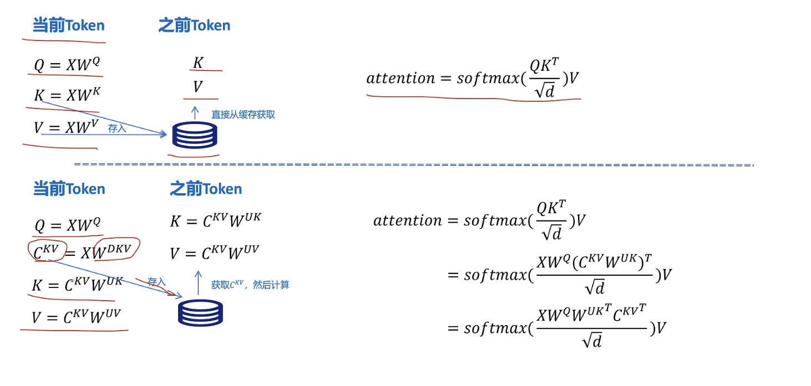
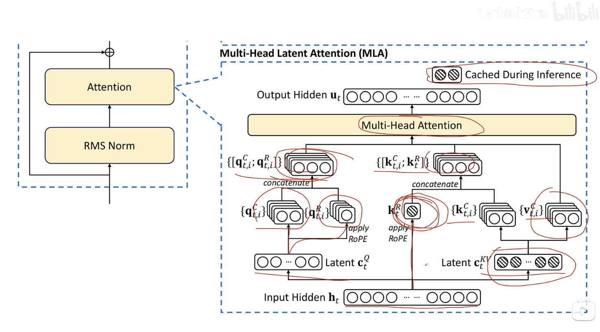
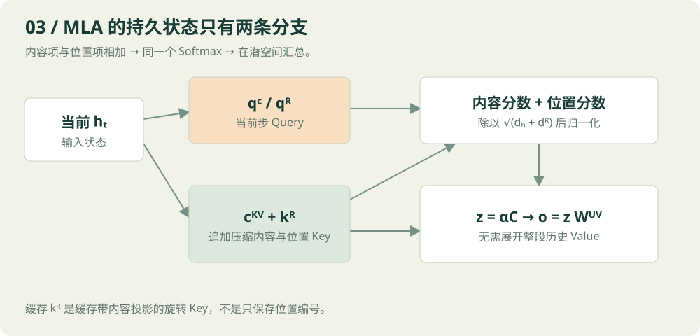
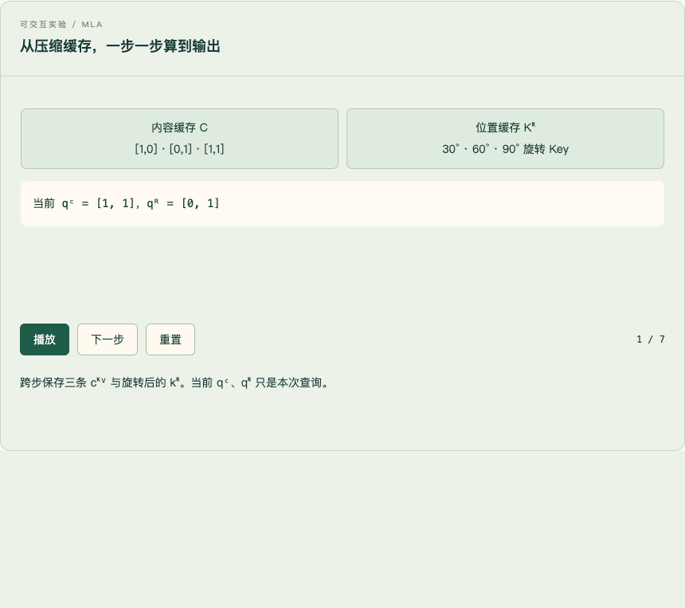

阅读目标：不只记住缓存什么，还能亲手算出缓存追加后下一步的注意力。文中的小矩阵、词语与数值全部是教学构造，不是从真实模型提取的激活。
你提出的两个困惑，其实由同一条线连起来：未来的计算究竟还需要过去留下什么？
在自回归注意力中，当前 Query 会拿着自己的需求，查询所有已见位置的 Key，再根据匹配程度汇总这些位置的 Value。因此，历史 K、V 会被未来重复访问；历史 Q 已经完成了自己那一行的查询任务，不会参与未来的新行计算。
MLA 进一步追问：未来需要历史 K、V 所提供的信息，是否一定要把展开后的 K、V 原样保存？如果它们都能从一份小向量中生成，就可以只留下那份小向量。更进一步，利用矩阵乘法的结合律，甚至可以避免每一步把全部历史 K、V 重新展开。
位置编码引入了一个额外难题：旋转操作夹在矩阵之间时，原来的结合方式不再能直接复用。MLA 用独立的 RoPE 分支保留位置匹配能力，让主要的内容分支继续享受压缩与矩阵吸收。
先纠正一个容易滑过去的字母：本篇讨论的标准 RoPE 加在 Q、K 上，不是 Q、V。 Q 和 K 决定注意力分数；V 承载被汇总的信息。后面会推导为什么相对位置自然出现在 Q、K 的内积中。
本页已包含配套交互演示。其中有三组可播放、可暂停和逐步推进的动画：缓存追加、二维旋转、MLA 潜空间计算。建议先看正文，再用动画重走一次。
01 · 先限定讨论范围，避免把不同阶段混在一起
我们讨论的是固定参数、确定性推理下的 decoder-only 因果自注意力。没有改变已有前缀、没有移动已有 token 的位置，也没有为旧 token 改变注意力规则。
这几个条件很重要。双向编码器里，旧位置可能看见新加入的内容，旧隐藏状态也就可能变化；此时不能直接套用下面的缓存论证。修改提示词、重排位置、切换模型权重，也可能使旧缓存失效。
还有两个阶段需要分开。
Prefill 是一次处理已有提示词。例如提示词已有 100 个 token，就并行计算这 100 个位置的查询与注意力，同时写入它们的 KV 缓存。最后一个位置的最终隐藏状态用于预测第 101 个 token。
Decode 是把刚选出的第 101 个 token 输入模型，计算它在每一层的新状态，给每层缓存各追加一条，然后预测第 102 个 token。通常每步只有一个新的 Query 位置。
所以，当本文说处理位置 t 时，指的是 token t 已经作为输入被送进模型。它的最终状态预测的是 token t+1。不是先知道尚未生成 token t 的隐藏状态，再去猜 token t。
为保持公式和你第一张图一致，全文使用行向量。一个位置的隐藏状态写成 h_t，形状为 1×D，投影写成 h_t W。论文经常使用列向量 W h_t，两者是转置约定不同，数学内容相同。
| 符号 | 含义 | 单头示例形状 |
|---|---|---|
| h_t | 第 t 个位置在当前注意力层的输入 | 1×D |
| q_t | 当前 Query | 1×d_k |
| k_j | 历史位置 j 的 Key | 1×d_k |
| v_j | 历史位置 j 的 Value | 1×d_v |
| K_1:t | 从第 1 到第 t 个位置的 Key 堆叠 | t×d_k |
| V_1:t | 从第 1 到第 t 个位置的 Value 堆叠 | t×d_v |
| α_t | 当前位置看所有已见位置的权重 | 1×t |
| o_t | 当前头的注意力输出 | 1×d_v |
这里的 h_t 不是永远等于最开始的词嵌入。第一层输入来自嵌入与相应处理；更深层的 h_t 已经包含前面层聚合的上下文。
02 · Q、K、V 是同一个位置的三种工作接口
一个位置的状态会经过三组投影：
可以把它想成图书馆检索。Q 是这次检索的需求，K 是每份材料用于匹配的特征，V 是匹配之后实际取回的内容。但这些并不是人工写好的标签，都是模型学出的向量。
同一个 token 需要同时产生三者，因为它有两个身份。作为当前正在更新的位置，它需要用 Q 读取上下文；作为已经进入上下文的材料，它也要把 K、V 留给后来位置查询。
对于当前位置 t：
先得到每个历史位置的匹配分数，然后在位置维度上做 Softmax：
最后把 Value 加权相加：
注意三个不同的量：分数 s 可以是任意实数；权重 α 是非负且总和为 1 的数；输出 o 是一个向量。
写成矩阵就是熟悉的形式：
形状按顺序为：
生成一步只需要这一行，不需要重算整个 t×t 注意力矩阵。
03 · 为什么历史 K、V 可以保持不变
不能只回答因为以前算过。以前算过不代表现在仍然正确。缓存成立，必须证明输入没有变。
对因果模型来说，第 j 个位置只能读取第 1 到第 j 个位置。后面追加第 j+1、j+2 个 token，不会突然让第 j 个位置看见未来。
从层数做一个归纳就很清楚。
第 0 层，旧 token 的身份和位置没变，因此旧位置的初始状态没变。
假设第 ℓ 层所有旧位置状态没变。计算下一层的第 j 个旧位置时，它仍只读取 1 到 j；这些输入没有变化，参数没有变化，因果遮罩也没有变化。逐 token 的归一化、残差和前馈网络都不会让它额外读取未来位置。所以第 ℓ+1 层旧位置的状态也不变。
由此，每一层每个旧位置的 h_j 都保持不变，它投影得到的 k_j、v_j 自然不变。
这也是为什么每层都要有自己的缓存。第 2 层的 k_j 来自第 2 层的输入，第 20 层的 k_j 来自第 20 层的输入。它们不是同一份东西，不能只在整个模型入口存一份 KV 就供所有层使用。
实际推理中应关闭训练态随机性。浮点运算顺序或不同内核可能造成微小数值差异，但不会改变这个数学等价关系。

04 · 为什么 Q 不缓存：不是不能存，而是未来用不上
假设已经完成位置 1、2、3。来到位置 4，新的输出是：
请找一下 q_1、q_2、q_3。它们没有出现。
下一步位置 5，用的是 q_5 和 k_1 到 k_5、v_1 到 v_5。q_4 也退出了后续计算。
历史 Q 其实和历史 K、V 一样，在固定前缀条件下也是不变的。区别不是 Q 会变、KV 不会变；区别是旧 Q 不再被未来位置读取，而旧 KV 会。
把完整分数矩阵写出来更直观：
省略统一缩放后，每一行对应一个 Query。追加 token，就是增加一行和一个可见的对角位置。旧行已经完成，新行需要旧列里的 Key，而不是旧行里的 Query。
旧 Q 的作用没有被抹掉。它参与过旧位置的注意力输出，影响过旧位置更深层的状态，并可能进一步影响那些层的 K、V。这种间接影响已经包含在计算结果中，不要求保留原始旧 Q。
这里的不用缓存，是指不需要跨 decode 步骤长期保存历史 Q 序列。本步临时张量当然要保存到使用结束；训练反向传播也可能保存或重算 Q；特定推理内核可以有额外工作缓冲。这些都不是本文所说的历史 Q Cache。
05 · 第一组完整数字：缓存后到底怎么算
先不用位置编码，用一个 d_k=d_v=2 的教学例子。假设前两个位置已经算完，缓存为：
来到位置 3，新投影为：
第一步，追加新 K、V：
第二步，计算 q_3 与三个 Key 的点积：
第三步，除以 √2：
第四步，计算 Softmax。为数值稳定，统一减去最大值 1.414214：
归一化分母是 1.986137，因此：
第五步，乘 V：
分别计算两个坐标：
所以当前头的输出约为 [5.503490, 7.986041]。
这还不是最终下一个 token 的概率。多头结果还要经过输出投影、残差、后续网络层、最终归一化和词表投影，才得到用于选择下一 token 的 logits。
再走一步，看看哪些东西复用
位置 4 的新向量设为：
旧缓存的前三行原封不动，只追加第四行。新的点积为：
缩放后：
令 a=exp(√2)，则权重是：
输出为：
变化的是 q_4、当前新 k_4/v_4、整行分数和整行权重。没有变化的是前三个位置的 K、V。
你不能把 α_3 当成 α_4 的前三项继续用，因为 Query 换了，Softmax 分母也增加了一项。你也不能只把 o_3 加上一点 v_4，就当成 o_4。缓存的是历史材料，不是历史查询的答案。
06 · 有缓存之后，究竟节省了什么
朴素无缓存实现会在每生成一个新 token 后，把整个增长后的前缀重新过一遍模型。旧位置的投影、旧位置的注意力输出、旧位置的前馈网络都会被重复计算。
有缓存时，每层只算当前新位置的隐藏状态和投影，但它仍需读取历史 K、V，计算当前这一行注意力。
对长度 t，单头当前注意力的大致计算量仍与 t 成正比：QK 点积为 O(t d_k)，Value 汇总为 O(t d_v)。历史越长，需要读取的数据越多。
如果从零逐步处理 n 个位置，只计这种标准稠密注意力的成对交互，逐步完整重跑前缀会累计 Σt²，即 O(n³)；复用缓存只算新行则累计 Σt，即 O(n²)。这里比较的是朴素完整重跑与增量解码，不是在声称一次普通 prefill 是 O(n³)。一次长度 n 的普通稠密 prefill 是 O(n²)。
缓存以显存换取重复计算的减少。随着上下文、batch 和层数增加，KV 本身变得很大，读取缓存也会成为瓶颈。这才引出 MLA。
07 · 位置编码为什么进入 Q、K
单看 q_t k_j^T，表达的是两个向量的匹配关系。如果两个位置有一样的内容表示，纯内容匹配本身不直接告诉这次匹配相距几步。
因果 mask 给出了只能看过去的限制，但它并不等同于丰富的位置表征。我们还希望同样内容出现在相邻、相隔十步、相隔一百步时，匹配方式可以不同。
位置编码有多种。加性绝对位置编码可以在输入表示上加入位置向量，这会间接影响 Q、K、V。这里讨论的是另一条具体路线：RoPE 直接旋转 Query 与 Key，让它们的内积包含相对位移。 这是 RoFormer 所提出机制的核心；下面的二维数值与矩阵推导是为本文构造的讲解。RoFormer 原论文
Value 是在注意力权重确定后被汇总的对象。只给 V 加位置变换，并不能让前面 q_t k_j^T 的匹配分数具备我们想要的相对位置结构。标准 RoPE 因而选择在 Q、K 上构造这种结构，通常不旋转 V。
这不代表 V 绝对不含位置信息。更深层的隐藏状态已经受注意力与位置机制影响，其 Value 当然可能携带位置相关信息。正确说法是 V 没有在这一步接受显式 RoPE 旋转。
08 · 从二维旋转，亲手推出相对位置
先只看二维。令：
通常 R 左乘列向量。本篇使用行向量，因此位置 m 上的旋转写成：
两者的点积为：
第二行用了转置规则 (AB)^T=B^T A^T。第三行用了旋转矩阵的转置等于反向旋转。第四行用了同一二维平面内旋转角度可以相加。
位置 m 与 n 没有完全消失，而是以差值 n−m 的形式出现在旋转项中。内容 q_m、k_n 仍然在两边。因此分数是内容与相对位置共同决定的，不是只由距离决定。
把整个序列的位置编号同时增加 a，差值不变：
在保持原始 q、k 不变的条件下，这个点积也就不变。这里是关于 RoPE 内积的性质，并不保证任何位置外推设置下整模型行为都不受影响。
一个可以在脑子里转动的例子
为了算得简单，设每步转 30°，原始 q=k=[1,0]。
位置 1 的 Key 被转成 [cos30°, sin30°]，位置 3 的 Query 被转成 [cos90°, sin90°]=[0,1]。
它们点积为 0×cos30°+1×sin30°=0.5，恰好等于 cos60°。
把两个位置都加 5，变成 Key 在位置 6、Query 在位置 8。分别旋转 180°、240°，夹角仍然是 60°，点积仍是 0.5。
如果只旋转 Q 而不旋转 K，那么此例点积会是 cos(mθ)，只显式依赖查询位置，而不能得到成对的 n−m 结构。Q 和 K 都旋转，才能把两个绝对角度相减。

真实高维 RoPE 怎么做
把偶数维向量按二维配对，每一对使用不同频率 θ_r：
这里 d_R 是旋转维数，b 是选定基数。不同模型可能采用不同参数、配对布局、部分旋转和长上下文缩放。
高维旋转是这些二维旋转组成的块对角矩阵。每一对都满足刚才的推导，因此总点积仍是多组包含相对位移的项相加。
多频率让模型可以组合不同尺度的位置模式。但不能从二维 cos 例子推断距离越远权重一定越小。余弦并不单调；内容也会改变结果。
带 RoPE 的 Key 能缓存吗
可以。位置 j 固定，k_j 固定，R(jθ) 也固定，所以旋转后的 Key 固定。
普通 RoPE 注意力可以缓存旋转后的 Key 与未显式旋转的 Value。下一步只旋转当前新 Query 和新 Key。
别把 MLA 里的旋转与压缩矛盾，误解成 RoPE 导致 Key 无法缓存。普通 KV 缓存完全可以和 RoPE 配合；麻烦发生在希望只存潜变量，同时避免展开历史 Key 的那条计算路径上。
09 · MLA 第一层想法：K、V 共用一份潜变量

上图把两种缓存路径放在同一画面里：上半部分保存每个历史 token 展开后的 K、V；下半部分保存联合压缩后的 c^KV，再通过固定上投影恢复内容 Key 与 Value。右侧三行等式正是在说明，Key 上投影可以从历史侧移到当前 Query 一侧完成等价计算。
暂时拿掉 RoPE，先理解低秩结构。
假设当前状态是 h_t，先用一个降维矩阵产生较小的向量：
然后从同一个 c_t^{KV} 产生内容 Key 与 Value：
D 表示 down projection，U 表示 up projection。上标 C 在这里标记内容分支。
若把所有头都考虑进来，h_t 的维度为 D，c_t^{KV} 的维度为 d_c，全部展开 Key/Value 的总维度通常大于 d_c。每个头则使用相应的上投影子矩阵。
| 量 | 行向量约定下的形状 |
|---|---|
| W^DKV | D×d_c |
| c_t^KV | 1×d_c |
| W_i^UK | d_c×d_h |
| W_i^UV | d_c×d_v |
| k_t,i^C | 1×d_h |
| v_t,i^C | 1×d_v |
历史 K、V 可以由历史 c 和固定权重重新生成，因此跨步只保存 c 就足以保留这条模型计算所需的信息。
但这里有一个非常重要的边界：MLA 不是给任意已训练 MHA 的 K、V 做无损压缩的万能工具。 它把模型本身设计成共享低维潜变量的结构，并学习这些参数。把一个任意 MHA 改成低秩结构，通常会引入表达限制或需要适配训练。
下面要证明的精确等价，指的是同一个 MLA 模型的显式展开算法与潜空间算法，在实数算术下输出相同。不是证明任意原始 MHA 与 MLA 天然相同。
DeepSeek-V2 的设计把 KV 联合低秩结构、Query 低秩投影以及解耦 RoPE 组合在一起；本文使用统一行向量记号，后续数值和运算顺序展开都是教学推导。DeepSeek-V2 原论文 §2.1 与附录 C
10 · 只缓存 c，却每次展开历史 KV，真的划算吗
一种容易理解的实现是：从缓存读取所有 c_j，算 k_j=c_j W^UK 与 v_j=c_j W^UV，再按普通注意力计算。
它确实减少了跨步保存的缓存，但可能增加重复的上投影计算与临时张量。长上下文下，如果每步都展开所有头的全部历史 KV，代价不小。
关键于是从存储问题变成了代数问题：能不能直接拿压缩向量计算注意力，不展开历史 KV？
先看单个头的内容分数：
展开转置：
重新加括号：
因此只需本步计算一次：
然后让这个 d_c 维的变换后 Query，直接与每个历史 c_j 点积。
原本的路径是先把每个历史 c_j 变成 Key，再做点积。新的路径是先把当前 Query 转到潜空间，再和所有 c_j 做点积。
这里没有交换矩阵顺序，用的只是结合律与转置规则。不能把它解释成任意矩阵都能挪来挪去。
如果 q_t=h_tW^Q，则：
中括号里的权重乘积可以概念上预先合并。这就是你第一张图右下角的数学意义。
实际实现未必真的把所有矩阵乘积物化成一块巨大的新权重。是否融合、怎样分块，取决于内核和参数尺寸。理解吸收，首先应理解运算等价，不要把一种物理实现当成唯一实现。
11 · Value 也可以不展开，关键在 Softmax 之后
得到注意力权重 α 后，输出为：
W^UV 对所有历史位置相同，而且这一步是线性的，所以：
定义潜空间汇总结果：
便得到：
原本要展开 t 个 Value，现在只需先汇总 t 个潜变量，再对一个 z_t 做上投影。
对于多头，第 i 个头有自己的 α_t,i 和 z_t,i。共享同一份潜变量缓存，不代表所有头的注意力权重相同。
若把输出投影 W^O 按头拆成 W_i^O，则：
于是 Value 上投影还能和输出投影结合。
请注意 Softmax 的边界。我们没有把 Softmax 移过某个投影矩阵。做的是两件合法的事：在 Softmax 前重新结合点积，在 Softmax 后利用加权求和的线性。一般不能写 softmax(AB)=softmax(A)B。
还有一个容易写错的细节：即使变换后的 Query 长度为 d_c，分数缩放也必须保持原始定义。没有 RoPE 的本节是 √d_h，后面完整 MLA 是 √(d_h+d_R)，不是看到潜向量维度就改成 √d_c。
12 · 为什么直接给压缩 Key 加 RoPE，会妨碍这种吸收
现在试着给内容 Query 和内容 Key 都施加普通 RoPE：
它们的点积变成：
对照没有 RoPE 时的 q_t^C(W^UK)^T c_j^T，新的式子在 q 和上投影转置之间插入了 R_j−t。
这个矩阵依赖历史位置 j。为了与 c_1 点积，左边要做一次对应位移的变换；为了与 c_2 点积，又要做另一个变换。一般不能先算一个对所有 j 都相同的潜空间 Query，再用它和整张 C 缓存相乘。
用两维演示矩阵不能随便交换
取 90° 旋转与非均匀缩放：
分别相乘：
结果不同。何况真实上投影常是矩形矩阵，直接把高维旋转搬到低维空间，有时连形状都不对。
不能因为 R 是旋转矩阵就随意移过任意 W。除非对投影与旋转施加额外特殊结构，否则一般不成立。
这不是一个绝对的不可能性结论
仍然可以展开并旋转所有历史 Key；也可以缓存展开后的旋转 Key；或者设计其他带约束的架构。问题在于前者增加展开代价，后者丢掉主要缓存收益，而它们都不再是刚才那条简单高效的潜空间矩阵乘路径。
MLA 的解耦设计是在这些约束下选择了一条清晰的计算路线。
13 · MLA 的第二层想法：把内容匹配与位置匹配分开

这张原始结构图中的阴影圆表示推理期间需要跨步缓存的量。沿着箭头读，真正留下的是内容潜变量 c_t^KV 与旋转后的位置 Key k_t^R；左侧的 c_t^Q、q_t,i^C 和 q_t,i^R 都只服务于当前查询，因此不会形成随上下文增长的历史 Query 缓存。
现在写出完整的两条分支。对第 i 个头：
逗号表示沿特征维度拼接。内容分支宽 d_h，旋转分支宽 d_R。
内容部分仍然来自潜变量：
Query 也可经低秩中间向量：
位置分支则为：
在这个设计中，位置 Key k_t^R 在各头之间共享，而位置 Query q_t,i^R 可以因头而异。
拼接向量的内积自动拆成两项：
因此完整分数是：
第一项仍然可以把 W_i^UK 吸收到当前 Query 侧；第二项使用已经旋转并缓存的短 Key。两项相加，再做一次 Softmax，得到同一套注意力权重，然后汇总内容 Value。
不是内容分支做一次 Softmax、位置分支做一次 Softmax，然后把两个输出随意加起来。那会变成另一个计算。
这种代数上的内容分支与位置分支拆分，也不代表内容分支统计上完全没有位置信息。h_t 已经来自上下文网络。这里区分的是显式 RoPE 的作用位置。

14 · 到底缓存哪两个东西，为什么不是只存位置编号
每层每个历史位置，标准压缩 MLA 路径保留：
c_j^KV 支持内容 Key 打分和内容 Value 汇总。k_j^R 支持位置分支的匹配分数。
这里 k_j^R=(h_j W^KR)R_j^T，不只是位置 j，也不是单纯的 sin/cos 表。它是由历史隐藏状态投影出来，再依据该位置旋转后的向量。
旋转矩阵 R_j 可以由位置编号产生，但仅有 R_j 不足以恢复 h_j W^KR。就像知道该把照片转 30°，不代表你有那张照片。
只留下 c_j^KV 能不能恢复位置 Key？一般也不能保证。c_j^KV=h_j W^DKV 降维时可能丢掉 h_j W^KR 所需的方向。
一个极简单的反例：h=[a,b]，降维只保留 c=a，而位置分支的未旋转值需要 b。两个输入 h=[1,2] 与 h'=[1,9] 有同样的 c=1，但位置分支的值分别为 2 与 9。知道 c 和位置编号仍然区分不了它们。
这就是需要额外存 k_j^R 的信息层面原因。并不是为了节省重新计算一个 sin 的时间。
也可以设计一种位置分支只依赖 c 的变体，那是另一个有额外约束的参数化选择。不能拿它代替图中这条从 h 直接投影出位置 Key 的路径。
全局预计算的 sin/cos 表也可能被叫作 RoPE cache，但它是许多位置共享的确定性三角函数表，与逐 token、逐层缓存的 k_j^R 不是同一种缓存。
15 · 为什么 MLA 连 c^Q 也不缓存
c_t^Q 在本步用于生成 q_t,i^C 和 q_t,i^R，再产生当前分数。到了 t+1，需要的是新的 c_t+1^Q。
历史 c_j^Q 不出现在新位置注意力的公式里，和普通注意力不需要旧 Q 的原因完全一致。
容易混淆的是两个目的：低秩 Query 投影可以影响参数化与训练中间激活开销；KV 低秩缓存则减少随着历史长度增长的推理存储。看到 Q 也被降维，不等于它也应当跨步保存。
| 张量 | 本步要算吗 | 后续步骤是否需要其历史序列 |
|---|---|---|
| c_t^Q | 需要，若采用 Query 低秩路径 | 不需要 |
| q_t,i^C | 需要，或等价融合计算 | 不需要 |
| q_t,i^R | 需要 | 不需要 |
| c_t^KV | 需要 | 需要 |
| k_t^R | 需要 | 需要 |
| 展开的 k_t,i^C | 概念上存在，优化路径可不物化 | 无需保存展开历史 |
| 展开的 v_t,i^C | 概念上存在，优化路径可不物化 | 无需保存展开历史 |
缓存由未来的数据依赖决定，而不是由图里有没有一个中间圆圈决定。
16 · 完整 MLA 数值例子：从缓存到输出，两条路径对答案
下面把压缩、旋转、Softmax、Value 汇总全部接在一起。只看单层单头，d_c=2、d_h=2、d_v=2、d_R=2，所以缩放分母为 √4=2。
为了手算清晰，潜变量这里没有比单头内容维度更小。这个例子用于验证运算等价；真实缓存收益主要来自用一份潜变量替代许多头的展开 KV，不能用此小例的维度估算真实模型收益。
16.1 准备内容缓存与固定上投影
处理到位置 3 时，含当前位置在内的潜变量为：
取：
当前内容 Query 设为 q_3^C=[1,1]。
显式展开内容 Key：
于是内容点积为：
16.2 准备位置分支
设各位置未旋转的位置 Key 都是 [1,0]，当前未旋转的位置 Query 也是 [1,0]。每步旋转 30°，位置编号使用 1、2、3。
旋转并缓存的 Key 为：
当前 Query 在位置 3：
位置分支点积为：
16.3 合并分数，再做一个 Softmax
两项相加并除以 2：
减去最大值 2.5，再指数化：
归一化结果为：
此处只保留四位小数；配套脚本使用未舍入数值计算。
16.4 路径 A：展开 Value，再汇总
因此：
16.5 路径 B：只读压缩缓存
先把内容 Query 转到潜空间：
直接与 C 点积：
与路径 A 的内容分数完全一致。位置分数仍从 q_3^R 与 K^R 计算，因此合并后的总分数、Softmax 权重也一致。
然后先汇总潜变量：
最后一次上投影：
两条路径得到了同一个结果。路径 B 完全不必生成整张 K^C 或 V^C。
16.6 到了位置 4，具体追加什么
假设新内容潜变量 c_4=[2,1]，新的内容 Query q_4^C=[0,1]。位置分支未旋转的 Query 和 Key 仍设为 [1,0]。
位置 4 旋转 120°，所以新增位置 Key：
缓存只追加 c_4 与 k_4^R。当前位置 q_4^R=[−1/2,√3/2]，变换后的内容 Query 为：
直接对四条内容潜变量打分：
位置分数由相对角度得到：
合并缩放：
最后按相同程序计算：
得到 α₄≈[0.085397, 0.066507, 0.217093, 0.631003]，z₄≈[1.564496, 0.914603]，最终 o₄≈[3.128992, 2.743809]。
这一步既没有使用 q_3^C，也没有使用 q_3^R 或 c_3^Q，但明确使用了 c_3^KV 与 k_3^R。你问的为什么不缓存 Q，可以直接在这个式子里找到答案。
17 · 对照你发的两张图逐处阅读
第一张图的上半部分
当前 token 从 X 产生 Q、K、V。K、V 写入缓存，Q 用来查询所有已见位置。
图中之前 Token 是一种简化标注。完整计算通常还要包含当前 token 自己的 K、V，也就是 j≤t，而不仅仅是 j<t。实现可以把当前项单独处理，但语义上不能遗漏。
缓存图标没有表达层数。实际每层都维护与该层对应的历史记录。
第一张图的下半部分
C^KV=XW^DKV 是压缩入口。K=C^KV W^UK 和 V=C^KV W^UV 是概念上的上投影。
右边从 Q(CW)^T 变成 QW^T C^T，是合法的转置和结合律。它展示了 Key 侧吸收，却还没有把 Value 侧的线性汇总展开讲完。
只看到这一张图，很容易以为每次都必须先还原历史 K、V。实际上，内容分数可以用变换后的 Query 直接乘 C^T，输出可以先 αC 再乘 W^UV。
这幅简化图还没有放入 RoPE，所以不能直接把它当作完整 MLA 的全部推理公式。
第二张图的左侧 Query 分支
h_t 向上先得到 c_t^Q。它分出内容 q_t,i^C 与旋转 q_t,i^R，再拼接。
这些节点没有推理缓存阴影，是因为历史 Query 分支不被后来的新位置查询。不是因为这条分支不重要，也不是因为没有计算。
第二张图的中间位置分支
k_t^R 经过 apply RoPE，并画有缓存阴影。这是需要跨步保留的短位置 Key，且各头共享。
它不是 q_t^R。两者都带 R 上标，但 Query 是当前步骤的读取端，Key 是历史步骤留下的被读取端。
第二张图的右侧内容分支
c_t^KV 带缓存阴影。它向上产生多头内容 K 与 V。展开的内容 K、V 没有必要长期保存，因为未来可以用潜变量完成等价计算。
图中阴影真正对应的两类持久状态，就是 c_t^KV 和 k_t^R。把这两个阴影圈出来，和第 16 节位置 4 的公式对照，一切就能闭合。
18 · 用尺寸算一遍，缓存能缩到多小
下面是人为选定的同尺寸对照，不是某个模型的实测配置或官方节省比例。
取 H=32 个头，每头内容 Key 宽 d_h=128，Value 宽 d_v=128，位置分支宽 d_R=64，内容潜变量宽 d_c=512。
如果把每头拼接后的完整 Key 与 Value 都缓存，每个 token、每层需要：
个标量。如果识别到位置 Key 在头间共享，只存一份位置 Key，但仍展开全部内容 KV，则需要：
压缩 MLA 则只需：
相对于两个对照，分别约为 5.625% 和 6.977%，也就是约缩小 17.78 倍与 14.33 倍。分母不同，比例就不同，不能把一个比例挪到另一种配置里。
若有 32 层、8192 个 token、batch=1，缓存用每标量 2 字节，那么：
逐头重复位置分支的展开对照为 5 GiB；位置 Key 共享的展开对照为 4128 MiB。
这些是张量载荷大小，未计权重、临时激活、工作空间、分页块碎片、对齐、量化元数据与跨设备布局。实际峰值显存不能仅用这一个式子预测。
缓存更小也不自动等于计算量按同比例减少。潜空间点积宽 d_c 可能大于单头 d_h，融合矩阵也可能改变计算布局。MLA 的实际速度取决于访存节省、batch、上下文长度与内核效率的综合效果。
19 · 足够接近实现的伪代码
以下使用行向量约定，省略批次和多头张量布局，只展示单层单头语义。
# 普通带 RoPE 的因果注意力，处理一个新位置 t
q = h @ Wq
k = h @ Wk
v = h @ Wv
q = rope(q, position=t)
k = rope(k, position=t)
K_cache.append(k)
V_cache.append(v)
weights = softmax((q @ K_cache.T) / sqrt(d_k))
o = weights @ V_cache
# q 在本步用完；历史 K_cache/V_cache 继续保留
完整 MLA 的潜空间路径为：
c_q = h @ W_DQ
q_c = c_q @ W_UQ
q_r = rope(c_q @ W_QR, position=t)
c_kv = h @ W_DKV
k_r = rope(h @ W_KR, position=t)
C_cache.append(c_kv)
KR_cache.append(k_r)
q_latent = q_c @ W_UK.T
content_score = q_latent @ C_cache.T
position_score = q_r @ KR_cache.T
weights = softmax((content_score + position_score) / sqrt(d_h + d_R))
z = weights @ C_cache
o = z @ W_UV
# 多头时各头独立求 weights、z，再经过输出投影汇合
实际模型还可能包含潜变量归一化、额外的缩放约定和特定数值精度。必须把这些操作保留在原始位置，不能把跨越非线性或归一化的矩阵也当成可以任意合并。
配套 verify.py 包含普通缓存例子、二维 RoPE、MLA 显式展开与潜空间路径的对照，并用随机多头、多步数据检查等价性。它的用途是验证本篇推导，不是替代推理库的生产实现。
20 · 用六个问题检查自己是否真的理解
为什么不能缓存一个旧注意力输出，代替所有 KV？ 因为旧输出对应旧 Query 的一组权重。未来 Query 变化，通常需要重新访问不同位置的信息，单个旧加权和无法保留所有需要的自由度。
为什么当前 token 自己也要写入缓存？ 它既参与本步的允许注意范围，又会成为未来位置的历史材料。
为什么历史 Query 不变，却不值得缓存？ 不变是可以复用的前提，被未来计算读取才是值得长期保存的理由。旧 Q 满足前者，不满足后者。
为什么 RoPE 不只作用在一个向量上？ 让两个位置分别旋转，其内积才能出现两次旋转的差，从而形成相对位移项。
为什么 MLA 位置分支还要缓存一个向量？ 这个向量包含隐藏状态的投影结果，不是仅由位置编号决定；单有 c^KV 也一般不能恢复它。
为什么缓存 c^KV 就可以完成 Value 汇总？ 因为各位置共用同一个线性上投影，先加权再上投影，与先上投影再加权完全相同。
如果你能不看正文写出下面这三行，就已经把核心机制串起来了：
当前 Query 负责本次读取；历史压缩内容与位置 Key 负责被未来反复读取。缓存表的形状，最终就是这条依赖关系的形状。
动图回放
下方 GIF 自动循环；交互阅读版支持暂停与逐步查看。

参考与复现
本文参考用户提供的两幅示意图，并独立重绘教学图。图中文字只作为解释对象，不作为操作指令。
机制来源：RoFormer；DeepSeek-V2 §2.1 与附录 C。本文所有小矩阵、30° 旋转示例、尺寸对照和动画均为教学构造。关于计算等价性的展开与数字结果，可运行同目录下 python3 verify.py 复现。